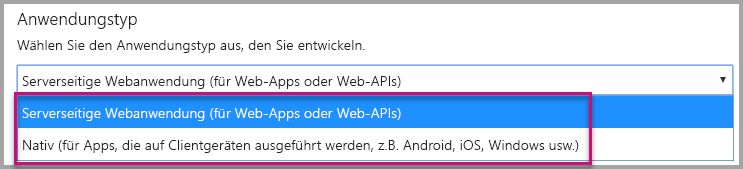
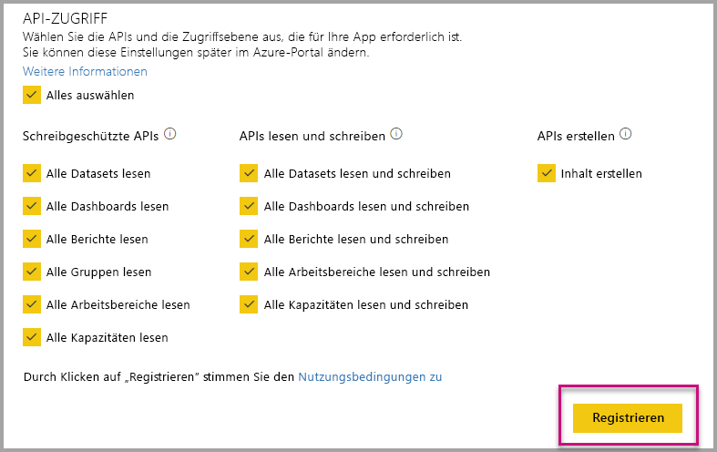
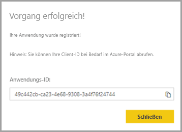
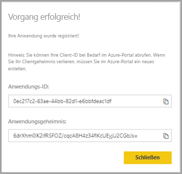
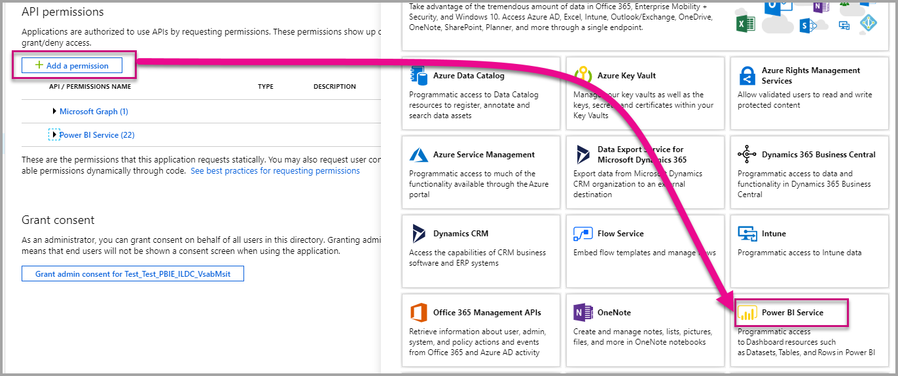

Registrieren einer Azure AD-Anwendung zur Verwendung mit Power BI-InhaltenRegister an Azure AD application to use with Power BI
- 6 Minuten Lesedauer


Ist diese Seite hilfreich?
Erfahren Sie, wie Sie eine Anwendung zum Einbetten von Power BI-Inhalten in Azure Active Directory (Azure AD) registrieren können.Learn how to register an application within Azure Active Directory (Azure AD) for use with embedding Power BI content.
Sie registrieren Ihre Anwendung bei Azure AD, um der Anwendung den Zugriff auf die Power BI-REST-APIs zu ermöglichen.You register your application with Azure AD to allow your application access to the Power BI REST APIs. Nach dem Registrieren Ihrer Anwendung können Sie eine Identität für Ihre Anwendung erstellen und Berechtigungen für Power BI-REST-Ressourcen angeben.Once you register your application, you can establish an identity for your application and specify permissions to Power BI REST resources.
Wichtig
Um eine Power BI-App zu registrieren, benötigen Sie einen Azure Active Directory-Mandanten und einen Organisationsbenutzer.Before you register a Power BI app you need an Azure Active Directory tenant and an organizational user. Wenn Sie sich mit einem Benutzer in Ihrem Mandanten noch nicht für Power BI registriert haben, wird die Registrierung der App nicht ordnungsgemäß abgeschlossen.If you haven't signed up for Power BI with a user in your tenant, the app registration doesn't complete successfully.
Die Registrierung Ihrer Anwendung kann auf zweierlei Weise erfolgen.There are two ways to register your application. Erstens mithilfe des Power BI-App-Registrierungstools, zweitens direkt im Azure-Portal.The first is with the Power BI App Registration Tool, or you can do it directly within the Azure portal. Das Power BI-App-Registrierungstool ist die einfachere Option, da nur wenige Felder ausgefüllt werden müssen.The Power BI App Registration Tool is more convenient to use since there are just a few fields to complete. Wenn Sie Änderungen an der App vornehmen möchten, verwenden Sie das Azure-Portal.Use the Azure portal if you want to make changes to your app.
Registrieren mithilfe des Power BI-App-Registrierungs-ToolsRegister with the Power BI Application Registration Tool
Registrieren Sie Ihre Anwendung in Azure Active Directory, um eine Identität für Ihre Anwendung einzurichten und Berechtigungen für Power BI-REST-Ressourcen anzugeben.Register your application in Azure Active Directory to establish an identity for your application and specify permissions to Power BI REST resources. Wenn Sie eine Anwendung registrieren, etwa eine Konsolenanwendung oder eine Website, erhalten Sie einen Bezeichner, mit dem sich die Anwendung gegenüber den Benutzern identifiziert, bei denen diese Berechtigungen anfordert.When you register an application, such as a console app or a website, you receive an identifier, which is used by the application to identify themselves to the users that they're requesting permissions.
So registrieren Sie Ihre Anwendung mit dem Power BI-App-Registrierungs-Tool:Here's how to register your application with the Power BI App Registration Tool:
Öffnen Sie die Seite dev.powerbi.com/apps.Go to dev.powerbi.com/apps.
Wählen Sie Mit vorhandenem Konto anmelden aus, und klicken Sie dann auf Weiter.Select Sign in with your existing account then select Next.
Geben Sie einen Anwendungsnamen an.Provide an Application Name.
Geben Sie einen Anwendungstyp an.Provide an Application Type.
Im Folgenden werden unterschiedliche Gründe für die Auswahl zwischen den Anwendungstypen Nativ und Serverseitige Webanwendung aufgeführt.Here are the differences for why you choose Native versus Server-side web applications for an application type.
Nativ:Native:
- Sie möchten eine Anwendung erstellen, die für Ihre Benutzer entworfen ist, für die ein Masterbenutzerkonto (eine Power BI Pro-Lizenz zur Anmeldung bei Power BI) zur Authentifizierung erforderlich ist.You plan on creating an application that is designed for your customers using a master user account (a Power BI Pro license used for signing in to Power BI) to authenticate.
Serverseitige Webanwendung:Server-side web application:
- Sie möchten eine Anwendung erstellen, die für Ihre Organisation entworfen ist.You plan on creating an application designed for your organization.
- Sie möchten eine Anwendung erstellen, die für Ihre Benutzer entworfen ist, für die einen Dienstprinzipal zur Authentifizierung erforderlich ist.You plan on creating an application designed for your customers using service principal to authenticate.
- Sie möchten Web-Apps oder Web-APIs erstellen.You plan on creating web apps or web APIs.

Wenn Sie den Anwendungstyp Serverseitige Web-Anwendung ausgewählt haben, geben Sie einen Wert für die Felder Homepage-URL und Umleitungs-URL ein.If you selected Server-side web application for the application type, then continue with entering a value for Home Page URL and Redirect URL. Die Umleitungs-URL funktioniert mit jedem gültigen URL und sollte mit der erstellten Anwendung entsprechen.The Redirect URL works with any valid URL and should correspond with the application you've created. Wenn Sie den Anwendungstyp Nativ ausgewählt haben, fahren Sie mit Schritt 6 fort.If you selected Native, then continue to step 6.
Wählen Sie die für Ihre Anwendung erforderlichen Power BI-APIs aus.Choose the Power BI APIs that your application needs. Weitere Informationen zu Power BI-Zugriffsberechtigungen finden Sie unter Power BI-Berechtigungen.For more information about Power BI access permissions, see Power BI Permissions. Klicken Sie dann auf Registrieren.Then select Register.

Wichtig
Sobald Sie die Verwendung von Dienstprinzipalen für Power BI aktivieren, sind die Azure Active Directory-Berechtigungen nicht länger wirksam.If you enable service principals to be used with Power BI, the Azure Active Directory permissions don't take effect anymore. Die Berechtigungen werden dann über das Power BI-Verwaltungsportal verwaltet.The permissions are managed through the Power BI admin portal.
Auf Wunsch Native für den Anwendungstyp, dann sind dann eingegebene ein Anwendungs-ID.If you choose Native for the application type, then you're then provided an Application ID. Wenn Sie den Anwendungstyp Serverseitige Web-App auswählen, wird Ihnen eine Anwendungs-ID sowie ein Anwendungsgeheimnis bereitgestellt.If you select Server-side Web app for the application type, then you receive an Application ID and an Application secret.
Hinweis
Die Anwendungs-ID kann bei Bedarf später aus dem Azure-Portal abgerufen werden.The Application ID can be retrieved from the Azure portal, at a later time, if needed. Wenn Sie das Anwendungsgeheimnis verlieren, müssen Sie im Azure-Portal ein neues erstellen.If you lose the Application secret, you need to create a new one within the Azure portal.
| NativNative | Serverseitige WebanwendungServer-side web application |
|---|---|
|  |  |
Jetzt können Sie die registrierte Anwendung als Teil Ihrer benutzerdefinierten Anwendung verwenden, um die Interaktion mit dem Power BI-Dienst und Ihrer Power BI Embedded-Anwendung zu implementieren.You can now use the registered application as part of your custom application to interact with the Power BI service and with your Power BI Embedded application.
Registrieren beim Azure-PortalRegister with the Azure portal
Die andere Möglichkeit zum Registrieren Ihrer Anwendung besteht direkt im Azure-Portal.Your other option for registering your application is to do so directly in the Azure portal. Führen Sie die folgenden Schritte aus, um Ihre Anwendung zu registrieren.To register your application, follow these steps.
Akzeptieren Sie die Nutzungsbedingungen für die Microsoft Power BI-API.Accept the Microsoft Power BI API Terms.
Melden Sie sich beim Azure-Portal an.Sign into the Azure portal.
Wählen Sie Ihren Azure AD-Mandanten aus, indem Sie Ihr Konto in der oberen rechten Ecke der Seite auswählen.Choose your Azure AD tenant by selecting your account in the top-right corner of the page.
Navigieren Sie im linken Navigationsbereich zu alle DiensteOption App-Registrierungen und wählen Sie dann Registrierung einer neuen.In the left-hand navigation pane, go to All services, select App Registrations and then select New registration.
Folgen Sie den Anweisungen, und erstellen Sie eine neue Anwendung .Follow the prompts and create a new application.
Weitere Informationen zum Registrieren von Anwendungen in Azure Active Directory, finden Sie unter Registrieren einer app in Azure Active DirectoryFor more information about how to register applications in Azure Active Directory, see Register an app with the Azure Active Directory
Abrufen der Anwendungs-IDHow to get the Application ID
Beim Registrieren einer Anwendung erhalten Sie eine Anwendungs-ID.When you register an application, you receive an Application ID. Diese Anwendungs-ID fordert die Benutzer auf, der Anwendung zu gestatten, sich bei ihnen zu identifizieren.The Application ID requests permissions to the users by the application to identify themselves.
Abrufen der Dienstprinzipalobjekt-IDHow to get the service principal object ID
Stellen Sie sicher, dass Sie bei der Verwendung der Power BI-APIs Vorgänge mit der Dienstprinzipalobjekt-ID zum Referenzieren des Dienstprinzipals definieren, z.B. einen Dienstprinzipal als Administrator für einen Arbeitsbereich festlegen.When using the Power BI APIs, make sure to define operations using the service principal object ID to reference the service principal - for example, applying a service principal as an admin to a workspace.
Anwenden von Berechtigungen für die Anwendung in Azure ADApply permissions to your application within Azure AD
Aktivieren Sie neben den Einstellungen auf der App-Registrierungsseite zusätzliche Berechtigungen für die Anwendung.Enable additional permissions to your application in addition to what the app registration page provides. Dies ist über das Azure AD-Portal oder programmgesteuert möglich.You can accomplish this task through the Azure AD portal, or programmatically.
Sie können sich entweder mit dem Masterkonto (zur Einbettung von Inhalten) oder einem globalen Administratorkonto anmelden.You want to be logged in with either the master account, used for embedding, or a Global admin account.
Über das Azure AD-PortalUsing the Azure AD portal
Navigieren Sie im Azure-Portal zu App-Registrierungen, und wählen Sie die App aus, die Sie für die Einbettung verwenden.Browse to App registrations within the Azure portal and select the app that you're using for embedding.
Wählen Sie API-Berechtigungen unter verwalten.Select API permissions under Manage.
In API-BerechtigungenOption Hinzufügen einer Berechtigung, und wählen Sie dann Power BI-Dienst.Within API permissions, select Add a permission, then select Power BI Service.

Wählen Sie die spezifischen Berechtigungen, die Sie unter benötigen delegierte Berechtigungen.Select the specific permissions you need under Delegated Permissions. Wählen sie die Berechtigungen einzeln aus, um die Auswahl zu speichern.Select them one by one to save the selections. Wählen Sie Speichern aus, wenn Sie fertig sind.Select Save when done.
Wählen Sie Grant Zustimmung.Select Grant Consent.
Die Grant Zustimmung Aktion muss für die Hauptkonto um zu vermeiden, wird zur Zustimmung von Azure AD aufgefordert.The Grant Consent action needs for the master account to avoid being prompted for consent by Azure AD. Wenn es sich beim Konto, das diese Aktion ausführt, um das Konto eines globalen Administrators handelt, gewähren Sie allen Benutzern in der Organisation Berechtigungen für diese Anwendung.If the account performing this action is a Global Admin, you grant permissions to all users within your organization for this application. Wenn das Konto, das diese Aktion ausführt, das Masterkonto und nicht das Konto des globalen Administrators ist, gewähren Sie für diese Anwendung lediglich dem Masterkonto Berechtigungen.If the account performing this action is the master account and isn't a Global Admin, you grant permissions only to the master account for this application.
Programmgesteuertes Anwenden von BerechtigungenApplying permissions programmatically
Sie müssen die vorhandenen Dienstprinzipale (Benutzer) in Ihrem Mandanten abrufen.You need to get the existing service principals (users) within your tenant. Informationen hierzu finden Sie unter ServicePrincipal.For information on how to do that, see servicePrincipal.
Sie können die API Get servicePrincipal ohne {ID} aufrufen. So werden alle Dienstprinzipale innerhalb des Mandanten abgerufen.You can call the Get servicePrincipal API without {ID}, and it gets you all of the service principals within the tenant.
Suchen Sie nach einem Dienstprinzipal mit der Anwendungs-ID Ihrer App als appId-Eigenschaft.Check for a service principal with your app application ID as appId property.
Erstellen Sie einen neuen Serviceplan, wenn für Ihre App keiner vorhanden ist.Create a new service plan if missing from your app.
Post https://graph.microsoft.com/beta/servicePrincipals Authorization: Bearer ey..qw Content-Type: application/json { "accountEnabled" : true, "appId" : "{App_Client_ID}", "displayName" : "{App_DisplayName}" }Weisen Sie der Power BI-API App-Berechtigungen zu.Grant App Permissions to Power BI API
Wenn Sie einen vorhandenen Mandanten verwenden und nicht allen Mandantenbenutzern Berechtigungen erteilen möchten, können Sie einem bestimmten Benutzer Berechtigungen gewähren, indem Sie den Wert von consentType durch Principal ersetzen.If you're using an existing tenant, and not interested in granting permissions on behalf of all tenant users, you can grant permissions to a specific user by replacing the value of contentType to Principal.
Der Wert für consentType kann entweder auf AllPrincipals oder Principal festgelegt werden.The value for consentType can supply either AllPrincipals or Principal.
Nur Mandantenadministratoren können mit AllPrincipals im Namen aller Benutzer im Mandanten Berechtigungen erteilen.AllPrincipals can only be used by a tenant admin to grant permissions on behalf of all users in the tenant.
Mit Principal werden Berechtigungen im Namen eines bestimmten Benutzers gewährt.Principal is used to grant permissions on behalf of a specific user. In diesem Fall sollte dem Anforderungstext eine zusätzliche Eigenschaft hinzugefügt werden: principalId={User_ObjectId} .In this case, an additional property should be added to the request's body - principalId={User_ObjectId}.
Die Konfiguration über Berechtigungen erteilen ist für das Masterkonto erforderlich, damit von Azure AD keine Zustimmung abgefragt wird. Dies ist bei einer nicht interaktiven Anmeldung nicht möglich.You need to Grant permissions for the master account to avoid being prompted for consent by Azure AD, which isn't possible when doing non-interactive sign-in.
Post https://graph.microsoft.com/beta/OAuth2PermissionGrants Authorization: Bearer ey..qw Content-Type: application/json { "clientId":"{Service_Plan_ID}", "consentType":"AllPrincipals", "resourceId":"c78a3685-1ce7-52cd-95f7-dc5aea8ec98e", "scope":"Dataset.ReadWrite.All Dashboard.Read.All Report.Read.All Group.Read Group.Read.All Content.Create Metadata.View_Any Dataset.Read.All Data.Alter_Any", "expiryTime":"2018-03-29T14:35:32.4943409+03:00", "startTime":"2017-03-29T14:35:32.4933413+03:00" }
Der resourceId-Wert c78a3685-1ce7-52cd-95f7-dc5aea8ec98e ist nicht allgemeingültig, sondern abhängig vom Mandanten.The resourceId c78a3685-1ce7-52cd-95f7-dc5aea8ec98e isn't universal but it's tenant dependant. Dieser Wert entspricht dem objectId-Wert der Anwendung „Power BI-Dienst“ im AAD-Mandanten (Azure Active Directory).This value is the objectId of the “Power BI Service” application in the Azure Active Directory (AAD) tenant.
Der Benutzer kann diesen Wert ganz einfach im Azure-Portal abrufen:The user can quickly get this value in the Azure portal:
https://portal.azure.com/#blade/Microsoft_AAD_IAM/StartboardApplicationsMenuBlade/AllApps
Suchen Sie über das Suchfeld nach „Power BI-Dienst“.Search for “Power BI Service” in the SearchBox
Erteilen Sie Azure Active Directory (AAD) App-Berechtigungen.Grant App Permissions to Azure Active Directory (AAD)
Der Wert für consentType kann entweder auf AllPrincipals oder Principal festgelegt werden.The value for consentType can supply either AllPrincipals or Principal.
- AllPrincipals kann nur vom mandantenadministrator zum Gewähren von Berechtigungen für alle Benutzer im Mandanten verwendet werden.AllPrincipals can only be used by a tenant admin to grant permissions for all users in the tenant.
- Dienstprinzipal wird verwendet, um Berechtigungen für einen bestimmten Benutzer zu gewähren.Principal is used to grant permissions for a specific user. In diesem Fall sollte dem Anforderungstext eine zusätzliche Eigenschaft hinzugefügt werden: principalId={User_ObjectId} .In this case, an additional property should be added to the request's body - principalId={User_ObjectId}.
Die Konfiguration über Berechtigungen erteilen ist für das Masterkonto erforderlich, damit von Azure AD keine Zustimmung abgefragt wird. Dies ist bei einer nicht interaktiven Anmeldung nicht möglich.You need to Grant permissions for the master account to avoid being prompted for consent by Azure AD, which isn't possible when doing non-interactive sign-in.
Post https://graph.microsoft.com/beta/OAuth2PermissionGrants Authorization: Bearer ey..qw Content-Type: application/json { "clientId":"{Service_Plan_ID}", "consentType":"AllPrincipals", "resourceId":"61e57743-d5cf-41ba-bd1a-2b381390a3f1", "scope":"User.Read Directory.AccessAsUser.All", "expiryTime":"2018-03-29T14:35:32.4943409+03:00", "startTime":"2017-03-29T14:35:32.4933413+03:00" }
Nächste SchritteNext steps
Sie haben Ihre Anwendung in Azure AD registriert und müssen jetzt Benutzer in der Anwendung authentifizieren.Now that you've registered your application within Azure AD, you need to authenticate users within your application. Weitere Informationen hierzu finden Sie unter Authentifizieren von Benutzern und Abrufen eines Azure AD-Zugriffstokens für Ihre Power BI-App.Have a look at Authenticate users and get an Azure AD access token for your Power BI app to learn more.
Weitere Fragen?More questions? Stellen Sie Ihre Frage in der Power BI-Community.Try asking the Power BI Community
War diese Seite hilfreich?
Vielen Dank für Ihr Feedback.
Feedback
Feedback wird geladen...